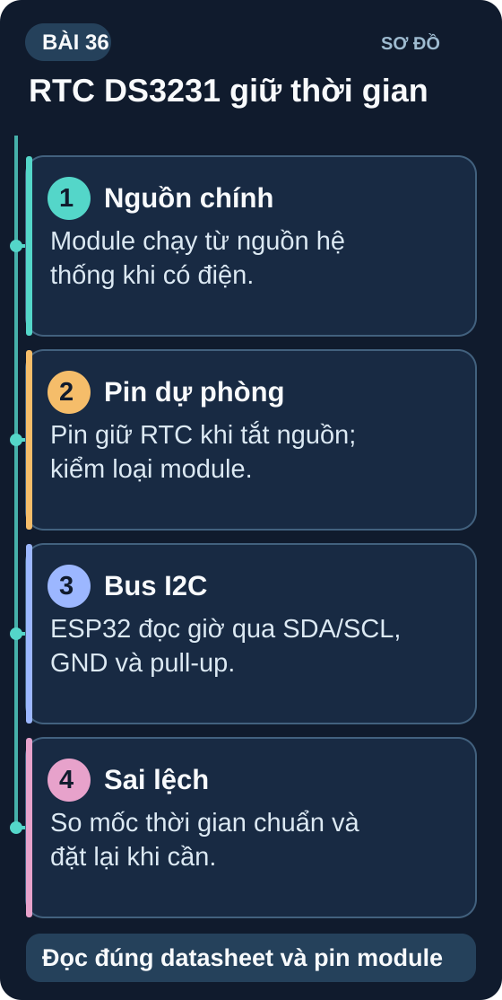

RTC DS3231 — Đồng Hồ Thời Gian Thực
Module thời gian thực chính xác nhất trong phân khúc giá rẻ — độ trôi <2ppm, tích hợp nhiệt độ bù và pin dự phòng CR2032.
- Hiểu RTC (Real Time Clock) — tại sao vi điều khiển cần module RTC riêng
- Phân biệt DS3231 (TCXO, ±2ppm) và DS1307 (±20ppm) — chọn loại nào
- Kết nối DS3231 I2C với Arduino/ESP32 — đọc giờ/phút/giây/ngày
- Set thời gian vào RTC và giữ qua tắt nguồn nhờ pin CR2032
- Đọc nhiệt độ tích hợp của DS3231 (±3°C, không chính xác bằng BME280)
- Cài đặt Alarm 1 và Alarm 2 — ngắt khi đến giờ
- Dự án: Đồng hồ hiển thị trên OLED với thời gian từ DS3231

1. Tại sao cần RTC module?
Vi điều khiển (Arduino, ESP32) có thể đếm thời gian bằng millis() — nhưng:
(1) millis() reset về 0 khi tắt nguồn; (2) millis() dần dần sai số (oscillator không chính xác như TCXO). DS3231 có oscillator bù nhiệt (TCXO) và pin CR2032 dự phòng — giữ thời gian chính xác kể cả khi mạch chính mất điện.
| Module | Độ chính xác | Kết nối | Tích hợp |
|---|---|---|---|
| DS3231 | ±2ppm (~1 phút/năm) | I2C (0x68) | TCXO, nhiệt độ, 2 alarm |
| DS1307 | ±20ppm (~10 phút/năm) | I2C (0x68) | Chỉ RTC cơ bản |
| PCF8563 | ±4,3ppm | I2C (0x51) | Low power, phổ biến IoT |
2. Kết nối và đọc DS3231
// DS3231 RTC — Arduino (thư viện RTClib của Adafruit)
#include <Wire.h>
#include <RTClib.h>
RTC_DS3231 rtc;
void setup() {
Serial.begin(115200);
if (!rtc.begin()) { Serial.println("DS3231 not found!"); while(1); }
// Set thời gian nếu RTC mất điện (pin hết)
if (rtc.lostPower()) {
Serial.println("RTC mất điện — đặt lại thời gian");
rtc.adjust(DateTime(F(__DATE__), F(__TIME__))); // Thời gian biên dịch
}
}
void loop() {
DateTime now = rtc.now();
Serial.printf("%04d/%02d/%02d %02d:%02d:%02d\n",
now.year(), now.month(), now.day(),
now.hour(), now.minute(), now.second());
// Nhiệt độ tích hợp DS3231
Serial.printf("Temp: %.2f°C\n", rtc.getTemperature());
delay(1000);
}
3. Dự án: Đồng hồ OLED + DS3231
Kết nối: DS3231 và SSD1306 OLED đều qua I2C (SDA, SCL, VCC 3,3V, GND).
Cài thư viện: RTClib (Adafruit), Adafruit_SSD1306, Adafruit_GFX.
Code: đọc thời gian từ DS3231 mỗi giây → hiển thị trên OLED dạng HH:MM:SS và DD/MM/YYYY.
Tắt nguồn 30 giây → bật lại → kiểm tra đồng hồ vẫn chạy đúng (nhờ pin CR2032).
Nâng cao: Thêm nút nhấn interrupt để điều chỉnh thời gian (tăng giờ/phút).
1: 1 năm = 365×24×3600 = 31,536,000 giây. Sai số = 2ppm × 31,536,000 = 2×10⁻⁶ × 31,536,000 = 63 giây/năm ≈ 1 phút/năm. DS1307 ±20ppm → 630 giây = 10,5 phút/năm.
2: I = 1,5µA = 0,0000015A. t = 225mAh / 0,0000015A = 150,000,000 giờ? Không đúng vì pin tự xả dần. Thực tế pin CR2032 giữ được 3–10 năm khi làm RTC backup — tự xả là yếu tố giới hạn, không phải dòng tiêu thụ.
3: rtc.setAlarm1(DateTime(2024,1,1,7,0,0), DS3231_A1_Hour); — Mode DS3231_A1_Hour: trigger khi giờ:phút:giây khớp. Cần kết nối chân SQW của DS3231 vào GPIO interrupt để nhận tín hiệu alarm. Trong ISR: bật LED, clear alarm flag.